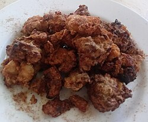

Bubble tea is a tea-based drink that originated in Taiwan in the early 1980s. Taiwanese immigrants brought it to the United States in the 1990s, initially in California through regions including Los Angeles County, but the drink has also spread to other countries where there is a large East Asian population. Source 1
Taiwanese beef noodle soup is a beef noodle soup dish that originated in Taiwan. It is sometimes referred to as "Sichuan beef noodle soup" in Taiwan, although this usage can create confusion as Sichuan has its own versions of beef noodle soups, Which may be sold at Sichuanese restaurants under the same name.
Source 2

Taiwanese fried chicken, westernized as popcorn chicken, is a dish in Taiwanese cuisine commonly found as a street snack. It is popular at the night markets in Taiwan. It consists of bite-sized pieces of chicken, coated and fried with flour and seasoning mixture. Salt and pepper is the staple condiment, while chili powder, lightly fried basil leaves, and garlic bits are added depending on preference.
Source 3
A suncake, or taiyang bing, is a popular Taiwanese dessert originally from the city of Taichung, in central Taiwan. The typical fillings consist of maltose (condensed malt sugar), and they are usually sold in special gift boxes as souvenirs for visitors. Some famous suncake pastry shops always have long lines of people waiting to buy boxed suncakes.
Source 4
The oyster omelette is a dish of Min Nan (Hokkien and Teochew) origin that is renowned for its savory flavor in its native Minnan region and Chaoshan, along with Taiwan and many parts of Southeast Asia, such as Philippines, Thailand, Malaysia or Singapore, due to the influence of the Hokkien and Teochew diaspora.
Source 5
Stinky tofu is a Chinese form of fermented tofu that has a strong odor. It is usually sold at night markets or roadside stands as a snack, or in lunch bars as a side dish, rather than in restaurants. Traditionally the dish is fermented in a brine with vegetables and meat, sometimes for months. Modern factory-produced stinky tofu is marinated in brine for one or two days to add odor. Generally speaking, stinky tofu is mainly made of tofu. After fermentation of edible mold, tofu can produce a large number of B vitamins, a variety of minerals and trace elements. The flavor of stinky tofu is bitter.Source 6
Braised pork rice is a gaifan dish found in Fujianese cuisine and Taiwanese cuisine. Although subject to regional variations, dishes are typically made of pork belly cooked in a process known as lu (boiled and marinated in soy sauce and sugar) and served on top of rice. Chinese pickles are often eaten with the dish.
Source 7
Sanbeiji is a popular chicken dish in Chinese cuisine and one of the most iconic dishes of Jiangxi cuisine. The dish originates from the Jiangxi province of southern China, and is a specialty of Ningdu where the population are Hakka. The dish has become especially popular in Taiwan, being introduced to the island by the Hakka people. It is also served as a postpartum confinement food by the Chinese community of Malaysia. The Jiangxi style has a complex flavor and is spicy, while the Taiwan variant has a more simplistic flavor and is non-spicy
.Source 8